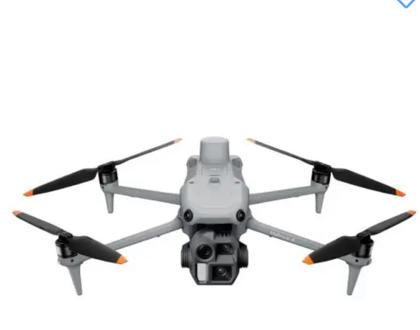
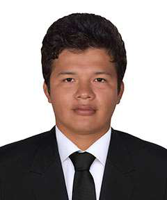

Misión
Brindar servicios de ingeniería y topografía con precisión, responsabilidad y eficiencia, utilizando herramientas modernas que permitan entregar información confiable y útil para la toma de decisiones de nuestros clientes.
Brindamos servicios de ingeniería civil, topografía, estructuras, levantamientos con dron y elaboración de planos, orientados a proyectos de construcción, infraestructura y soporte técnico especializado.
Somos una empresa orientada a brindar soluciones técnicas en ingeniería civil, topografía y levantamientos con dron, aplicando herramientas tecnológicas que permiten obtener información precisa para la planificación, ejecución y control de proyectos.
Nuestro trabajo está enfocado en atender requerimientos de construcción, infraestructura, desarrollo urbano y proyectos privados, adaptándonos a las necesidades específicas de cada cliente.
Contamos con un equipo con experiencia en ingeniería, topografía, estructuras, supervisión, gestión de proyectos y administración.
Brindar servicios de ingeniería y topografía con precisión, responsabilidad y eficiencia, utilizando herramientas modernas que permitan entregar información confiable y útil para la toma de decisiones de nuestros clientes.
Consolidarnos como una empresa reconocida por la calidad de sus servicios técnicos, el uso de nuevas tecnologías y el cumplimiento de los compromisos asumidos en cada proyecto.
Integramos trabajo de campo, procesamiento de información y criterio técnico para ofrecer resultados claros, precisos y alineados con las necesidades reales de cada servicio.
Desarrollamos servicios enfocados en levantamiento de información, análisis técnico, documentación y control de obra.
Captura técnica y visual para terrenos, obras y áreas de intervención.

La empresa está iniciando operaciones. La experiencia mostrada corresponde a la trayectoria individual de sus integrantes.

Cuenta con experiencia en proyectos de minería, infraestructura y construcción, participando tanto en trabajos de campo como en oficina técnica.
Ha desarrollado actividades relacionadas con inspecciones y evaluaciones estructurales, elaboración de informes técnicos, análisis estructural, desarrollo de planos, metrados, control topográfico, instalaciones sanitarias y soporte técnico para proyectos de ingeniería.
Cuenta con experiencia profesional en ingeniería estructural, supervisión y desarrollo de proyectos de infraestructura.
Ha participado en proyectos relacionados con estructuras, puentes, muros de contención, canales, obras viales y soluciones técnicas para diferentes tipos de infraestructura.
Cuenta con experiencia en elaboración y revisión de expedientes técnicos, supervisión, control de obras e infraestructura vial.
Ha desarrollado actividades de metrados, presupuestos, valorizaciones, elaboración de planos, topografía, diseño geométrico y control de niveles y pendientes.
Si necesitas servicios de topografía, ingeniería civil, estructuras, levantamientos con dron o elaboración de planos, podemos ayudarte a evaluar tu necesidad.
Compártenos el tipo de servicio requerido, la ubicación del proyecto, el alcance del trabajo y cualquier información adicional disponible. Así podremos orientarte mejor.